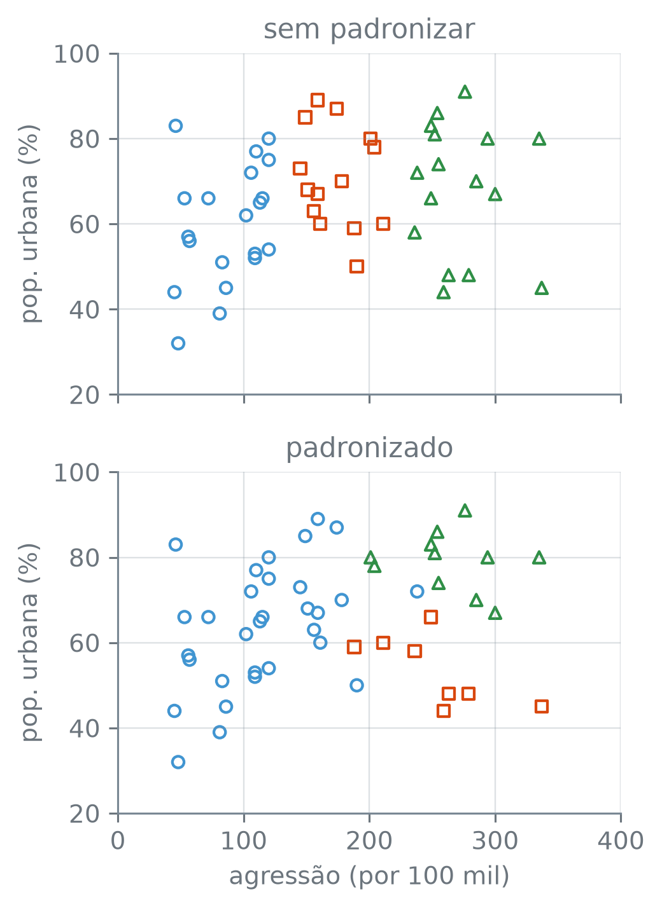
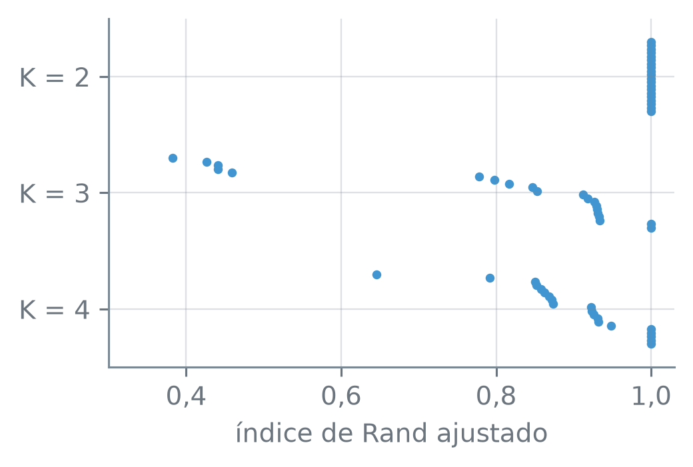

numero_br = lambda v, casas=2: (
f"{v:,.{casas}f}"
.replace(",", "_")
.replace(".", ",")
.replace("_", ".")
.replace("-", "−")
)Questões Práticas em Clustering
Nota
Esta seção corresponde às seções 12.4.3 e 12.5.4 de James et al. (2023).
Para agrupar observações, alguém decide se padroniza as colunas, quantos grupos pede, que ligação usa e com que semente começa. Cada decisão dessas é pequena e pode mudar os grupos. Se outra tivesse sido tomada, os grupos continuariam lá?
A função numero_br escreve os números com a pontuação brasileira:
Padronizar ou não
Os 50 estados do USArrests têm quatro colunas: as prisões por homicídio, agressão e estupro a cada 100.000 habitantes, e o percentual de população urbana. Com a ligação completa e três grupos, o agrupamento hierárquico dá a mesma divisão com as colunas como vêm e com elas padronizadas?
import numpy as np
import pandas as pd
from sklearn.cluster import (
AgglomerativeClustering)
from sklearn.preprocessing \
import StandardScaler
prisoes = pd.read_csv(
"dados/USArrests.csv",
index_col="estado")
padronizador = StandardScaler()
padr = padronizador.fit_transform(
prisoes)
print("forma:", padr.shape)
ag = AgglomerativeClustering(
n_clusters=3,
linkage="complete")
g_cru = ag.fit_predict(prisoes)
g_pad = ag.fit_predict(padr)
print("tamanhos dos 3 grupos:")
print(" sem padronizar:",
*np.sort(np.bincount(g_cru)))
print(" padronizado:",
*np.sort(np.bincount(g_pad)))forma: (50, 4)
tamanhos dos 3 grupos:
sem padronizar: 14 16 20
padronizado: 8 11 31ag.fit_predict(X)— ajusta o agrupamento às linhas deXe devolve o grupo de cada uma, o mesmo queag.fit(X)seguido deag.labels_. O mesmoagserve para as duas tabelas: cada chamada refaz o agrupamento do zero.
Os tamanhos já mostram que as divisões diferem. O índice de Rand ajustado, que a saída abrevia como ARI, mede quanto, e as faixas de agressao em cada grupo mostram o que a divisão sem padronizar separou:
from sklearn.metrics import (
adjusted_rand_score)
ari = adjusted_rand_score(
g_cru, g_pad)
print("ARI entre as duas:",
numero_br(ari, 3))
agr = prisoes["agressao"]
for nome, g in [("sem", g_cru),
("com", g_pad)]:
fx = (agr.groupby(g)
.agg(["min", "max"])
.sort_values("min"))
lo = fx["min"].to_numpy()
hi = fx["max"].to_numpy()
sep = np.all(hi[:-1] < lo[1:])
print(f"{nome} padronizar:")
for a, b in zip(lo, hi):
print(f" {a} a {b}")
print(" faixas separadas:",
bool(sep))ARI entre as duas: 0,368
sem padronizar:
45 a 120
145 a 211
236 a 337
faixas separadas: True
com padronizar:
45 a 238
188 a 337
201 a 335
faixas separadas: Falseserie.groupby(g).agg(["min", "max"])— separa os valores da série pelo grupoge calcula, em cada grupo, o menor e o maior: uma linha por grupo, com as colunasminemax..sort_values("min")ordena as linhas pela colunamin.hi[:-1] < lo[1:]— compara o máximo de cada faixa com o mínimo da faixa seguinte; tudoTruequer dizer que nenhuma faixa invade a seguinte.
O índice de Rand ajustado entre as duas divisões é 0,368, longe de 1. Sem padronizar, os três grupos são só três faixas de agressao, que não se tocam. Padronizadas as colunas, as faixas se sobrepõem, e as outras três colunas passam a pesar. A figura abaixo mostra os mesmos 50 estados duas vezes, com a cor do grupo de cada divisão:
import matplotlib.pyplot as plt
fig, eixos = plt.subplots(
2, 1, figsize=(3.8, 5.2),
sharex=True)
urb = prisoes["pop_urbana"]
cores = ["C0", "C1", "C2"]
marcas = ["o", "s", "^"]
titulos = ["sem padronizar",
"padronizado"]
for ax, g, tit in zip(eixos,
[g_cru, g_pad], titulos):
ordem = (agr.groupby(g).mean()
.sort_values().index)
for k, grupo in enumerate(
ordem):
m = g == grupo
ax.scatter(agr[m], urb[m],
s=22,
marker=marcas[k],
facecolors="none",
edgecolors=cores[k],
linewidths=1.1)
ax.set_title(tit)
ax.set_ylabel(
"pop. urbana (%)")
eixos[1].set_xlabel(
"agressão (por 100 mil)")
plt.tight_layout()
plt.show()
USArrests, com as prisões por agressão no eixo horizontal e o percentual de população urbana no vertical, nos dois painéis. A cor e a marca de cada ponto são as do seu grupo na ligação completa com 3 grupos: em cima, com as colunas como vêm; embaixo, com as colunas padronizadas. As cores são só nomes para os grupos.
ax.scatter(..., facecolors="none", edgecolors=cor)— pontos vazados, só com o contorno na cor dada; pontos que caem no mesmo lugar continuam visíveis.
Por que uma coluna manda? Com \(n\) observações e \(p\) colunas, a distância euclidiana ao quadrado entre as observações \(i\) e \(i'\) é uma soma com uma parcela por coluna:
\[ d^2(i, i') = \sum_{j=1}^{p} (x_{ij} - x_{i'j})^2. \]
Somada em todos os pares ordenados \((i, i')\) de estados, incluindo \(i = i'\), a parcela da coluna \(j\) dá \(2n^2\) vezes a variância dela, calculada com o divisor \(n\). A fatia de cada coluna na soma das distâncias ao quadrado é, então, a fração dela na variância total, a mesma conta que a seção 15.3 fez para agressao:
def fatias(A):
A = np.asarray(A, dtype=float)
v = A.var(axis=0)
return v / v.sum()
amplitude = (prisoes.max()
- prisoes.min())
f_cru = fatias(prisoes)
f_pad = fatias(padr)
print("amplitude · fatia crua",
"· padr.")
for c, amp, a, b in zip(
prisoes.columns,
amplitude, f_cru, f_pad):
print(f" {c}:",
numero_br(amp, 1), "·",
numero_br(a), "·",
numero_br(b))
outras = amplitude.drop(
"agressao")
vezes = np.all(
amplitude["agressao"]
> 4 * outras)
print("agressao > 4 × as outras:",
bool(vezes))amplitude · fatia crua · padr.
homicidio: 16,6 · 0,00 · 0,25
agressao: 292,0 · 0,96 · 0,25
pop_urbana: 59,0 · 0,03 · 0,25
estupro: 38,7 · 0,01 · 0,25
agressao > 4 × as outras: Truenp.asarray(A, dtype=float)—Acomo array de números decimais, seja ela uma tabela dopandasou já um array.prisoes.max() - prisoes.min()— a amplitude de cada coluna: o maior valor menos o menor.
Sem padronizar, agressao responde por 0,96 da soma das distâncias ao quadrado. A amplitude dela, 292,0, passa de quatro vezes a de cada uma das outras três (homicídio, 16,6; população urbana, 59,0; estupro, 38,7), e a parcela de cada coluna cresce com o quadrado das diferenças: as diferenças em agressao abafam as das outras colunas. Padronizadas, as quatro colunas ficam com 0,25 cada, e pesam igual.
Padronizar é sempre o certo? Uma loja vende meias e computadores e quer agrupar os clientes pelo que compram. Oito clientes compraram, num ano, estas quantidades:
meias = np.array(
[8, 11, 7, 6, 5, 6, 7, 8])
pcs = np.array(
[0, 0, 0, 0, 1, 1, 1, 1])
qtd = np.column_stack(
[meias, pcs])
# preço: 20 reais o par de meias
# e 4.000 reais o computador
reais = qtd * [20, 4000]
pad = StandardScaler() \
.fit_transform(qtd)
versoes = {"quantidade": qtd,
"padronizada": pad,
"em reais": reais}
print("fatia das meias:")
for nome, A in versoes.items():
f = fatias(A)[0]
print(f" {nome}:",
numero_br(f, 3))fatia das meias:
quantidade: 0,922
padronizada: 0,500
em reais: 0,000np.column_stack([a, b])— junta os arraysaebcomo as colunas de uma tabela, aqui de 8 linhas e 2 colunas.qtd * [20, 4000]— multiplica a primeira coluna por 20 e a segunda por 4.000, linha a linha.
Contadas em unidades, as meias ficam com 0,922 da soma das distâncias ao quadrado: um cliente que comprou 11 pares fica longe de um que comprou 5, e ter comprado ou não um computador quase não conta. Padronizadas, as duas colunas pesam o mesmo, 0,500. Em reais, a fatia das meias fica abaixo de 0,001, e quem decide as distâncias é o computador, que vale muito mais para a loja.
Qual das três versões está certa depende do que a loja quer dos grupos. Se o que importa é o dinheiro gasto, a versão em reais serve; se é o hábito de compra, a padronizada dá a meias e computadores o mesmo peso. Quando as colunas estão em unidades que não se comparam, como prisões por 100.000 habitantes e percentual de população urbana, padronizar evita que a unidade escolha os grupos. O k-means, que usa essa distância, tem a mesma questão.
Quantos grupos
O k-means pede \(K\) antes de começar. A inércia, a soma das distâncias ao quadrado de cada ponto ao centroide do seu grupo, serve para escolher \(K\)? Para comparar, a conta roda nos estados padronizados e em duas tabelas de 50 linhas e 4 colunas, com valores sorteados de uma distribuição normal e sem grupo nenhum. Na primeira, o ruído independente, as colunas não têm relação entre si. Na segunda, o ruído correlacionado, a normal tem a matriz de covariância dos estados padronizados, estimada por np.cov, e as colunas se correlacionam como as dos estados.
from sklearn.cluster import KMeans
ger_ind = (np.random
.default_rng(15))
ruido = ger_ind.normal(
size=(50, 4))
cov = np.cov(padr.T)
ger_cor = (np.random
.default_rng(15))
nuvem = (ger_cor
.multivariate_normal(
np.zeros(4), cov, 50))
tabelas = {"estados": padr,
"independente": ruido,
"correlacionado": nuvem}
Ks = range(1, 9)
iner = {}
for nome, A in tabelas.items():
iner[nome] = np.array([
KMeans(n_clusters=K,
n_init=50,
random_state=15)
.fit(A).inertia_
for K in Ks])
print("inércia com K = 1:")
for nome, v in iner.items():
print(f" {nome}:",
numero_br(v[0]))
cai = np.all(np.diff(v) < 0)
print(" só cai:",
bool(cai))
rel = {nome: v / v[0]
for nome, v in iner.items()}
print("fração que resta:")
print("K: estados · indep.",
"· correl.")
for i, K in enumerate(Ks):
print(f"{K}:", *[numero_br(
rel[n][i]) for n in rel])
ind = rel["independente"][1:]
teto = np.maximum(
rel["estados"][1:],
rel["correlacionado"][1:])
acima = np.all(ind > teto)
print("independente acima das")
print(" outras, em K > 1:",
bool(acima))inércia com K = 1:
estados: 200,00
só cai: True
independente: 197,62
só cai: True
correlacionado: 216,12
só cai: True
fração que resta:
K: estados · indep. · correl.
1: 1,00 1,00 1,00
2: 0,52 0,75 0,57
3: 0,40 0,60 0,44
4: 0,29 0,50 0,35
5: 0,25 0,41 0,28
6: 0,22 0,35 0,24
7: 0,20 0,30 0,21
8: 0,18 0,26 0,19
independente acima das
outras, em K > 1: Truenp.cov(padr.T)— a matriz de covariância das colunas depadr: na diagonal, a variância de cada coluna; fora dela, a covariância de cada par. O.Ttranspõe a tabela, porquenp.covtrata cada linha como uma variável. O divisor é \(n - 1\), e não o \(n\) doStandardScaler.ger.multivariate_normal(media, cov, 50)— sorteia 50 linhas de uma normal com o vetor de médias e a matriz de covariância dados. Aqui o vetor de médias énp.zeros(4), quatro médias iguais a 0.np.maximum(a, b)— o maior deaebem cada posição: aqui, a curva mais alta entre a dos estados e a do ruído correlacionado, em cada \(K\).
Com \(K = 1\), o centroide é a média de cada coluna. Nos estados padronizados, cada coluna tem média 0 e, com o divisor \(n\) do StandardScaler, soma dos quadrados igual a \(n\): a inércia é \(np\), com \(n = 50\) estados e \(p = 4\) colunas, 200. Os dois ruídos não foram padronizados, e as inércias deles com \(K = 1\) são 197,62 e 216,12.
A inércia cai a cada grupo a mais, nas três tabelas. Como na seção 15.4, a melhor divisão com \(K + 1\) grupos nunca tem inércia maior que a melhor com \(K\), porque dá para partir um grupo em dois sem aumentar a soma; aqui, os valores que o k-means achou também caem. O menor valor fica no maior \(K\) testado, e por isso a inércia não escolhe \(K\) pelo menor valor.
Uma leitura comum é procurar um cotovelo, um \(K\) a partir do qual a inércia passa a cair pouco. Na figura abaixo, as três curvas estão divididas pela inércia de \(K = 1\), para ficarem na mesma escala:
fig, ax = plt.subplots(
figsize=(3.8, 3.0))
estilos = {
"estados": ("C0", "o"),
"correlacionado": ("C1", "^"),
"independente": ("0.45", "s")}
for nome, (cor, mk) in \
estilos.items():
ax.plot(Ks, rel[nome],
marker=mk, color=cor,
markersize=4, label=nome)
ax.set_xlim(0.6, 8.4)
ax.set_ylim(0, 1.05)
ax.set_xticks(list(Ks))
ax.yaxis.set_major_formatter(
lambda v, _: f"{v:.1f}"
.replace(".", ","))
ax.set_xlabel("K")
ax.set_ylabel("fração da inércia")
ax.legend(loc="upper right")
plt.tight_layout()
plt.show()![Gráfico de linhas com K, de 1 a 8, no eixo horizontal e a fração da inércia de K igual a 1, de 0 a 1, no vertical, com a legenda no canto de cima à direita. As três curvas começam em 1 e caem a cada K. A dos estados, azul com círculos, cai para 0,52 em K igual a 2 e 0,29 em K igual a 4. A do ruído correlacionado, laranja com triângulos, fica perto dela, com 0,57 em K igual a 2 e 0,35 em K igual a 4. A do ruído independente, cinza com quadrados, desce de modo mais uniforme, com 0,50 em K igual a 4, acima das outras duas em todo K maior que 1. As três curvas vão se achatando conforme K cresce, sem um ponto único a partir do qual a queda pare.](06-questoes-praticas-em-clustering_files/figure-html/fig-inercia-output-1.png)
USArrests e em duas tabelas de ruído normal de 50 linhas e 4 colunas, sem grupo nenhum: uma com colunas independentes e outra com a matriz de covariância dos estados.
Com \(K = 4\), restam 0,29 da inércia nos estados e 0,50 no ruído independente: a curva dos estados cai mais depressa. Isso não prova que há grupos nos estados.
O ruído correlacionado, que também não tem grupo nenhum, deixa 0,35 com \(K = 4\). Nestes dois sorteios, a correlação entre as colunas responde por 0,15, de 0,50 para 0,35, dos 0,21 que separam o ruído independente, com 0,50, dos estados, com 0,29. A queda rápida vem, em boa parte, de as colunas andarem juntas, e não de grupos. Os 0,06 que ainda separam o ruído correlacionado, com 0,35, dos estados, com 0,29, vêm de um sorteio só e não permitem afirmar que os estados têm grupos.
Onde fica o cotovelo dos estados, em 2 ou em 4? A curva não responde. E o ruído independente, sem grupo nenhum, também aceita ser dividido:
km3 = KMeans(n_clusters=3,
n_init=50, random_state=15)
km3.fit(ruido)
tam = np.sort(
np.bincount(km3.labels_))
print("ruído, K = 3, tamanhos:",
*tam)
print("pontos sem grupo:",
len(ruido) - tam.sum())ruído, K = 3, tamanhos: 15 16 19
pontos sem grupo: 0Com \(K = 3\), o k-means divide o ruído em grupos de 15, 16 e 19 pontos, e todo ponto entra num deles. Pedidos três grupos, ele devolve três, haja ou não grupos no dado. A escolha de \(K\), como o corte do dendrograma, é de quem analisa: vale olhar alguns valores e ficar com o que dá grupos que se interpretam e que se repetem.
Rótulos e sementes
O k-means com \(K = 4\) roda duas vezes nos estados padronizados, com as sementes 15 e 16. Quantos estados recebem o mesmo rótulo nas duas?
km_a = KMeans(n_clusters=4,
n_init=50, random_state=15)
km_b = KMeans(n_clusters=4,
n_init=50, random_state=16)
rot_a = km_a.fit(padr).labels_
rot_b = km_b.fit(padr).labels_
iguais = np.mean(rot_a == rot_b)
print("rótulos iguais:",
numero_br(iguais))
print(pd.crosstab(rot_a, rot_b,
rownames=["semente 15"],
colnames=["semente 16"]))
print("ARI:", numero_br(
adjusted_rand_score(
rot_a, rot_b)))
mesma = np.isclose(km_a.inertia_,
km_b.inertia_)
print("mesma inércia:",
bool(mesma))rótulos iguais: 0,48
semente 16 0 1 2 3
semente 15
0 16 0 0 0
1 0 8 0 0
2 0 0 0 13
3 0 0 13 0
ARI: 1,00
mesma inércia: Truenp.mean(a == b)— a fração das posições em queaebcoincidem: cadaTrueconta 1, e cadaFalse, 0.
Só 0,48 dos estados têm o mesmo rótulo nas duas execuções, e a divisão, ainda assim, é a mesma: cada linha da tabela cruzada tem uma só casa preenchida, o índice de Rand ajustado é 1,00, e a inércia é igual. As duas sementes acharam os mesmos quatro grupos e os numeraram em outra ordem. Os rótulos são nomes, e comparar dois agrupamentos rótulo a rótulo mede a numeração; a tabela cruzada e o índice de Rand ajustado comparam os grupos.
No NCI60, as 64 amostras de câncer têm 6.830 genes. Com os genes padronizados, \(K = 4\) e 100 começos por semente, dez sementes chegam à mesma divisão?
nci = pd.read_csv(
"dados/NCI60.csv.gz")
tipo = nci["tipo"]
genes = nci.drop(columns="tipo")
print("forma:", genes.shape)
padr_nci = (padronizador
.fit_transform(genes))
def dez_sementes(A):
return [KMeans(n_clusters=4,
n_init=100,
random_state=s).fit(A)
for s in range(10)]
def distintas(modelos):
unicas = []
for m in modelos:
r = m.labels_
nova = all(
adjusted_rand_score(
r, u) < 1
for u in unicas)
if nova:
unicas.append(r)
return len(unicas)
km_genes = dez_sementes(padr_nci)
print("genes, 10 sementes:")
print(" divisões distintas:",
distintas(km_genes))
iner_nci = [m.inertia_
for m in km_genes]
print(" inércia, menor:",
numero_br(min(iner_nci), 0))
print(" inércia, maior:",
numero_br(max(iner_nci), 0))
r0 = km_genes[0].labels_
aris_0 = [adjusted_rand_score(
r0, m.labels_)
for m in km_genes[1:]]
print(" menor ARI com a 0:",
numero_br(min(aris_0)))forma: (64, 6830)
genes, 10 sementes:
divisões distintas: 9
inércia, menor: 350.576
inércia, maior: 351.928
menor ARI com a 0: 0,50A função distintas guarda uma divisão como nova quando o índice de Rand ajustado dela com cada uma das já guardadas fica abaixo de 1, isto é, quando ela não repete nenhuma.
As dez sementes dão 9 divisões diferentes, com inércias entre 350.576 e 351.928. As inércias são próximas, e as divisões, não.
Com a semente 0 como referência, o menor índice de Rand ajustado entre as outras nove é 0,50. Há vários ótimos locais de inércia parecida e divisão diferente, e 100 começos por semente não bastam para as dez execuções coincidirem. O que fazer com elas? Ficar com a de menor inércia é o que o n_init já faz dentro de cada semente; mais útil é conferir se o que se quer concluir depende da divisão escolhida, como a parte sobre hierárquico e k-means, adiante, faz com o grupo da leucemia.
Os primeiros escores da PCA resumem a tabela e deixam de fora a variação pequena, que às vezes é ruído (seção 15.3). O mesmo k-means, rodado sobre os 5 primeiros escores em vez dos 6.830 genes, chega à mesma divisão nas dez sementes?
from sklearn.decomposition \
import PCA
pca = PCA()
escores = pca.fit_transform(
padr_nci)
cinco = escores[:, :5]
print("forma:", cinco.shape)
acum = (pca
.explained_variance_ratio_[:5]
.sum())
print("variância nos 5:",
numero_br(acum))
km_esc = dez_sementes(cinco)
print("5 escores, 10 sementes:")
print(" divisões distintas:",
distintas(km_esc))forma: (64, 5)
variância nos 5: 0,32
5 escores, 10 sementes:
divisões distintas: 1escores[:, :5]— as 5 primeiras colunas dos escores, as das 5 primeiras componentes, para as 64 amostras.
Sobre os 5 escores, as dez sementes dão uma divisão só. Os 5 escores guardam 0,32 da variância total dos genes: são um resumo curto, e o número 5 é mais uma decisão pequena, como \(K\), que outro valor poderia mudar. O problema ficou menor, com 5 colunas em vez de 6.830, e os ótimos locais que atrapalhavam deixaram de aparecer nessas dez sementes.
Hierárquico, k-means e escores no NCI60
A ligação completa, cortada em 4 grupos, e o k-means com \(K = 4\) dividem as amostras do mesmo jeito? Os números dos grupos são nomes arbitrários, e a função por_tamanho troca cada um pelo tamanho do grupo, que tem significado: “o grupo de 8” é o mesmo, qualquer que seja o número que o método lhe deu.
def por_tamanho(rot):
cont = np.bincount(rot)
distintos = len(set(cont))
assert distintos == len(cont)
return cont[rot]
ag4 = AgglomerativeClustering(
n_clusters=4,
linkage="complete")
hc = por_tamanho(
ag4.fit_predict(padr_nci))
km15 = KMeans(n_clusters=4,
n_init=100, random_state=15)
km_tam = por_tamanho(
km15.fit(padr_nci).labels_)
print(pd.crosstab(hc, km_tam,
rownames=["hierárquico"],
colnames=["k-means"]))
ari_hk = adjusted_rand_score(
hc, km_tam)
print("ARI:",
numero_br(ari_hk, 3))k-means 8 9 15 32
hierárquico
7 0 0 0 7
8 8 0 0 0
9 0 0 9 0
40 0 9 6 25
ARI: 0,314cont[rot]— troca cada rótulo pelo tamanho do seu grupo, comocentros[nuvem]trocou cada nuvem pelo seu centro na seção 15.4.assert distintos == len(cont)interrompe a execução com um erro se dois grupos tiverem o mesmo tamanho, porque aí o tamanho não distinguiria um do outro.
As linhas são os grupos do hierárquico, e as colunas, os do k-means, cada um com o seu tamanho. O índice de Rand ajustado, 0,314, diz que as duas divisões diferem bastante. O grupo de 7 do hierárquico está inteiro no grupo de 32 do k-means, e o grupo de 40 se espalha por três grupos do k-means. E as amostras de leucemia?
e_leu = tipo == "leucemia"
leu = np.unique(hc[e_leu])
print("leucemia num grupo só:",
len(leu) == 1)
g_leu = hc == leu[0]
print("tamanho do grupo:", leu[0])
print(tipo[g_leu].value_counts())leucemia num grupo só: True
tamanho do grupo: 8
tipo
leucemia 6
K562B-repro 1
K562A-repro 1
Name: count, dtype: int64As amostras de leucemia ficam num grupo só do hierárquico, o de 8, que a seção 15.5 já descreveu: as de leucemia e as K562-repro, medições repetidas de uma linhagem também de leucemia. Outra divisão tem exatamente esse grupo quando as 8 amostras dele recebem o mesmo rótulo e nenhuma outra amostra recebe esse rótulo. É o que a função tem_o_grupo confere em três divisões: a do k-means com a semente 15, as das dez sementes de km_genes e a do hierárquico com a ligação média no lugar da completa, porque a ligação também é uma decisão:
def tem_o_grupo(rot):
r = rot[g_leu]
so_um = len(set(r)) == 1
n = (rot == r[0]).sum()
return bool(so_um
and n == g_leu.sum())
ag_med = AgglomerativeClustering(
n_clusters=4,
linkage="average")
hc_media = ag_med.fit_predict(
padr_nci)
n_tem = sum(tem_o_grupo(
m.labels_) for m in km_genes)
print("k-means, semente 15:",
tem_o_grupo(km_tam))
print("10 sementes:", n_tem)
print("ligação média:",
tem_o_grupo(hc_media))
print(" tamanhos:", *np.sort(
np.bincount(hc_media)))
ari_lig = adjusted_rand_score(
hc, hc_media)
print(" ARI com a completa:",
numero_br(ari_lig, 3))k-means, semente 15: True
10 sementes: 7
ligação média: True
tamanhos: 1 1 8 54
ARI com a completa: 0,362rot[g_leu]— os rótulos só das 8 amostras do grupo da leucemia, porqueg_leuéTruenelas eFalsenas outras.
O k-means com a semente 15 forma exatamente esse grupo, e 7 das dez sementes o formam. A ligação média também o forma, mas divide o resto em grupos de 1, 1 e 54 amostras, e por isso o índice de Rand ajustado com a completa fica em 0,362.
O hierárquico também pode rodar sobre os 5 primeiros escores, em vez dos genes. Que grupos ele forma, e como eles se comparam com os tipos de câncer, que não entraram no agrupamento?
esc = por_tamanho(
ag4.fit_predict(cinco))
tab = pd.crosstab(tipo, esc,
colnames=["grupo"])
print(tab)
colon = (tab.loc["cólon"] > 0)
print("cólon num grupo só:",
colon.sum() == 1)
leuc = (tab.loc["leucemia"] > 0)
print("grupos com leucemia:",
leuc.sum())
print("ARI com o dos genes:",
numero_br(adjusted_rand_score(
hc, esc), 3))grupo 4 6 20 34
tipo
K562A-repro 0 1 0 0
K562B-repro 0 1 0 0
MCF7A-repro 1 0 0 0
MCF7D-repro 1 0 0 0
SNC 0 0 3 2
cólon 0 0 0 7
desconhecido 0 0 1 0
leucemia 0 4 0 2
mama 2 0 5 0
melanoma 0 0 7 1
ovário 0 0 1 5
próstata 0 0 0 2
pulmão 0 0 1 8
rim 0 0 2 7
cólon num grupo só: True
grupos com leucemia: 2
ARI com o dos genes: 0,270Sobre os escores, os grupos têm 4, 6, 20 e 34 amostras, e a leucemia deixou de formar um grupo só: parte dela fica no grupo de 6, com as duas K562-repro, e parte no de 34.
Os grupos também não coincidem com os tipos. As 7 de cólon ficam juntas, no grupo de 34, mas a mama se divide entre os grupos de 4 e de 20, e o SNC, entre os de 20 e de 34.
O índice de Rand ajustado com a divisão feita sobre os genes é 0,270, menor que os 0,314 entre hierárquico e k-means nos genes: trocar a tabela de entrada mudou os grupos ao menos tanto quanto trocar o método.
A figura abaixo mostra as 64 amostras nas duas primeiras componentes, com a cor e a marca do grupo formado sobre os 5 escores. O agrupamento usou 5 dimensões, e o gráfico mostra 2: grupos que se separam nas outras três podem se sobrepor aqui.
fig, ax = plt.subplots(
figsize=(3.8, 3.4))
tams = np.unique(esc)
cores = ["C1", "C3", "C2", "C0"]
marcas = ["D", "^", "s", "o"]
for t, cor, mk in zip(
tams, cores, marcas):
m = esc == t
ax.scatter(escores[m, 0],
escores[m, 1], s=20,
marker=mk,
facecolors="none",
edgecolors=cor,
linewidths=1.1,
label=f"{t} amostras")
ax.set_xlabel("escore na PC1")
ax.set_ylabel("escore na PC2")
ax.legend(ncol=2, fontsize=9,
loc="lower center",
bbox_to_anchor=(0.5, 1))
plt.tight_layout()
plt.show()![Gráfico de dispersão com 64 pontos vazados, o escore na primeira componente no eixo horizontal e o da segunda no vertical, em quatro grupos, com a legenda acima: 4, 6, 20 e 34 amostras. Os 34 círculos azuis se concentram no meio da nuvem. Os 20 quadrados verdes se estendem para fora dela, numa região própria, com alguns misturados aos azuis. Os 6 triângulos roxos ficam juntos numa ponta, afastados de todos os outros, dois deles quase no mesmo lugar, e os 4 losangos laranja, perto da borda da massa azul, encostados nela.](06-questoes-praticas-em-clustering_files/figure-html/fig-nci-escores-output-1.png)
NCI60 nas duas primeiras componentes principais, com a cor e a marca do grupo do agrupamento hierárquico, pela ligação completa, sobre os 5 primeiros escores. Na legenda, o tamanho de cada grupo. As cores são só nomes para os grupos.
O grupo de 6, com 4 das amostras de leucemia e as duas K562-repro, é o dos triângulos roxos, juntos numa ponta da nuvem. As outras 2 de leucemia ficam no grupo de 34, o dos círculos azuis.
Os grupos resistem a perder dados?
Se 10 dos 50 estados fossem deixados de fora, o k-means dividiria os outros 40 como na tabela inteira? Para cada \(K\) de 2 a 4, o k-means roda nos 50 estados padronizados e em 20 subamostras de 40, cada uma sorteada com uma semente. Cada subamostra é padronizada só com os seus 40 estados, como se os outros 10 não existissem. Em cada uma, o índice de Rand ajustado compara a divisão dos 40 com a que eles tinham na tabela inteira:
Ks_sub = [2, 3, 4]
completo = {}
for K in Ks_sub:
km_c = KMeans(n_clusters=K,
n_init=50,
random_state=15)
rot = km_c.fit(padr).labels_
completo[K] = rot
X = prisoes.to_numpy()
aris_sub = {K: [] for K in Ks_sub}
for s in range(20):
ger_sub = np.random \
.default_rng(s)
fica = ger_sub.choice(50, 40,
replace=False)
Z = StandardScaler() \
.fit_transform(X[fica])
for K in Ks_sub:
km_s = KMeans(
n_clusters=K,
n_init=50,
random_state=15)
sub = km_s.fit(Z).labels_
antes = completo[K][fica]
aris_sub[K].append(
adjusted_rand_score(
antes, sub))
print("K: menor · mediana ·",
"iguais · <0,5")
for K in Ks_sub:
v = np.array(aris_sub[K])
igual = np.isclose(v, 1).sum()
baixo = (v < 0.5).sum()
print(f"{K}:",
numero_br(v.min()), "·",
numero_br(np.median(v)),
"·", igual, "·", baixo)K: menor · mediana · iguais · <0,5
2: 1,00 · 1,00 · 20 · 0
3: 0,38 · 0,88 · 2 · 5
4: 0,65 · 0,92 · 5 · 0ger.choice(50, 40, replace=False)— sorteia 40 inteiros distintos entre 0 e 49: as posições dos estados que ficam na subamostra. Comreplace=False, nenhum se repete.X[fica]ecompleto[K][fica]— só as linhas sorteadas, na ordem do sorteio, nos dados e nos rótulos da tabela inteira.np.median(v)— a mediana dos valores dev.
Com \(K = 2\), as 20 subamostras dão a mesma divisão da tabela inteira.
Com \(K = 3\), só 2 das 20 dão a mesma, e a divisão muda nas outras 18. Com \(K = 4\), 5 das 20 dão a mesma, e a divisão muda nas outras 15.
As medianas de \(K = 3\) e \(K = 4\), 0,88 e 0,92, ficam próximas e altas: na subamostra típica, a divisão muda pouco. A diferença entre os dois está nas piores subamostras: com \(K = 3\), 5 das 20 ficam abaixo de 0,5, e o menor índice é 0,38; com \(K = 4\), nenhuma, e o menor é 0,65. Com 0,38, tirar 10 estados reorganiza os três grupos. A figura abaixo mostra os 20 valores de cada \(K\):
fig, ax = plt.subplots(
figsize=(3.8, 2.6))
desloc = np.linspace(
-0.3, 0.3, 20)
for K in Ks_sub:
v = np.sort(aris_sub[K])
ax.scatter(v, K + desloc,
s=12, color="C0",
linewidths=0)
ax.set_yticks(Ks_sub)
ax.set_yticklabels(
[f"K = {K}" for K in Ks_sub])
ax.set_xlim(0.3, 1.03)
ax.xaxis.set_major_formatter(
lambda v, _: f"{v:.1f}"
.replace(".", ","))
ax.set_xlabel(
"índice de Rand ajustado")
ax.invert_yaxis()
plt.tight_layout()
plt.show()
np.linspace(-0.3, 0.3, 20)— 20 valores igualmente espaçados de −0,3 a 0,3; somados aK, põem os 20 pontos de cada linha em alturas diferentes.ax.set_yticklabels(lista)— troca os números das marcas do eixo vertical pelos textos da lista.ax.invert_yaxis()põe o menor \(K\) em cima.
Nestes dados, a estabilidade não acompanha \(K\): a divisão em 2 grupos resistiu às 20 subamostras, e as divisões em 3 e em 4 grupos mudaram na maioria delas, em geral pouco (medianas 0,88 e 0,92), mais a em 3. É uma informação que a inércia não dava, e que ajuda a escolher entre os valores de \(K\) que se interpretam bem. Estabilidade é condição necessária para um grupo valer, não prova de que ele existe: uma nuvem contínua, sem grupo nenhum, também pode ser cortada do mesmo jeito em várias subamostras.
Interpretar com cautela
O k-means e o agrupamento hierárquico põem toda observação num grupo, como o ruído mostrou. Quando a maioria das observações forma poucos grupos e umas poucas são muito diferentes de tudo, essas poucas entram mesmo assim em algum grupo e puxam o centroide dele, ou formam grupos próprios.
E uma observação a meio caminho entre dois grupos? Os modelos de mistura são uma versão “suave” do k-means. Em vez de pôr cada observação num grupo, dão a ela uma probabilidade de pertencer a cada grupo, e essas probabilidades somam 1: uma observação assim recebe, por exemplo, 0,5 e 0,5, onde o k-means a poria inteira num só. Cada grupo tem também uma densidade, que diz quão comum é uma observação naquela região. Uma observação atípica tem densidade baixa sob todos os grupos, e isso a deixa à vista em vez de escondida num grupo.
Há também métodos que tentam medir se um grupo encontrado é mais do que o acaso produziria num dado sem grupos, mas não há consenso sobre qual usar. O que se pode fazer sempre é rodar o agrupamento com outras escolhas, de escala, de \(K\), de ligação, de semente e de subamostra, e ver o que se repete.
Os grupos continuariam lá com outra decisão? Alguns, sim: a divisão dos estados em 2 grupos sobreviveu às 20 subamostras sorteadas. Outros, não: sem padronizar, os estados se dividiram em faixas de uma coluna só, e em 5 das 20 subamostras a divisão em 3 grupos mudou bastante (índice abaixo de 0,5). E há os que dependem da decisão: o grupo da leucemia apareceu, sobre os genes, com as duas ligações e em 7 das 10 sementes do k-means, e se desfez quando o hierárquico rodou sobre os 5 escores. O que se repete sob escolhas diferentes é o que vale relatar, como hipótese a conferir em dados novos.
James, Gareth, Daniela Witten, Trevor Hastie, Robert Tibshirani, e Jonathan Taylor. 2023. An Introduction to Statistical Learning with Applications in Python. Springer.